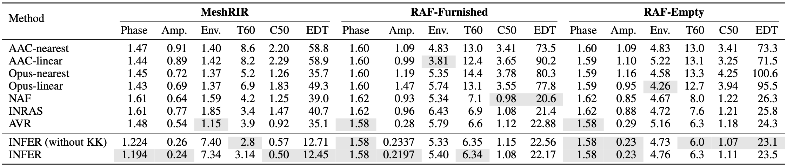
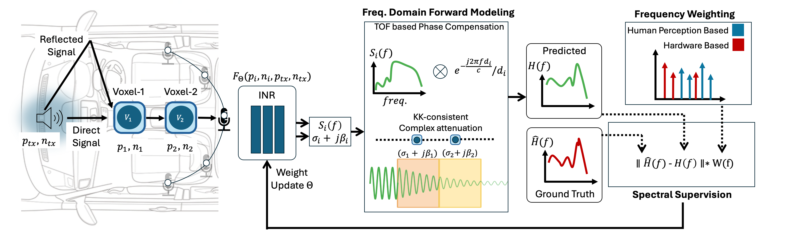

Results
Evaluation on Real World Room Scale Datasets

Accurate modeling of spatial acoustics is critical for immersive and intelligible audio in confined, resonant environments such as car cabins. Current tuning methods are manual, hardware-intensive, and static, failing to account for frequency selective behaviors and dynamic changes like passenger presence or seat adjustments. To address this issue, we propose INFER (Implicit Neural Frequency Response fields), a frequency-domain neural framework that is jointly conditioned on source and receiver positions, orientations to directly learn complex-valued frequency response fields inside confined, resonant environments like car cabins.
We introduce three key innovations over current neural acoustic modeling methods: (1) novel end-to-end frequency-domain forward model that directly learns the frequency response field and frequency-specific attenuation in 3D space; (2) perceptual and hardware-aware spectral supervision that emphasizes critical auditory frequency bands and deemphasizes unstable crossover regions; and (3) a physics-based Kramers–Kronig consistency constraint that regularizes frequency-dependent attenuation and delay.
We evaluate our method over real-world data collected in multiple car cabins. Our approach significantly outperforms time- and hybrid-domain baselines on both simulated and real-world automotive datasets, cutting average magnitude and phase reconstruction errors by over 39% and 51%, respectively. INFER sets a new state-of-the-art for neural acoustic modeling in automotive spaces.


@inproceedings{anonymous2026infer,
title = {INFER: Learning Implicit Neural Frequency Response Fields for Confined Car Cabin},
author = {Anonymous},
booktitle = {International Conference on Machine Learning (ICML)},
year = {2026}
}